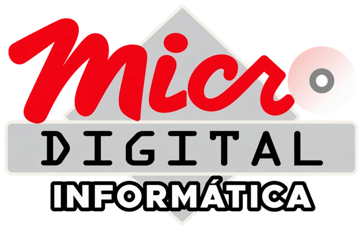

A marca continua reconhecível.
Lettering Micro, DIGITAL, losango e disco preservados. Bordas refinadas e fundo transparente para uso digital.
Versão proposta, sujeita à aprovação.
Vermelho. Prata. Grafite.
Contraste para ler. Cor para reconhecer.
Uma nova voz visual
Tecnologia perto.
Solução de verdade.
Solução de verdade.
Outfit nos títulos. Manrope nos textos.

1995
História real como ponto de confiança.
Sem números ou depoimentos
inventados.
Caminhos diretos
Menu ramificado acessível.
Produtos e reparos em uma página.
WhatsApp
com assunto preenchido.
Telefone e e-mail a um toque.
Pronto para revisar
Protótipo local. Sem publicação.
Conteúdo e horários fáceis de
alterar.
Imagens identificadas como ilustrativas.
Blog em
página separada, com quatro publicações.